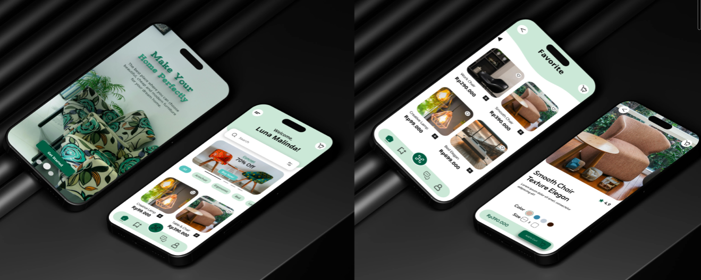
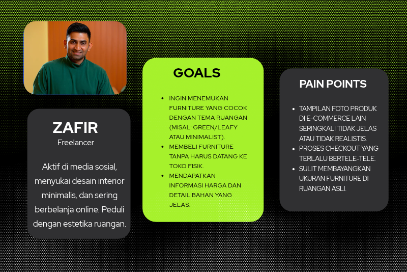
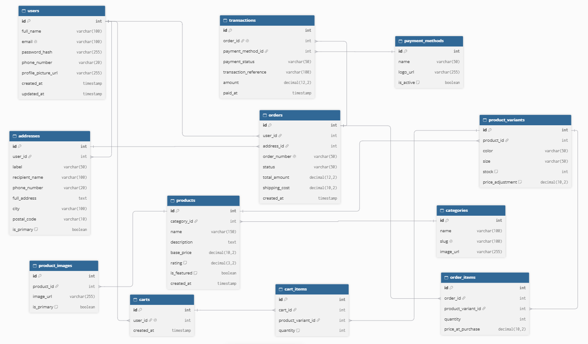
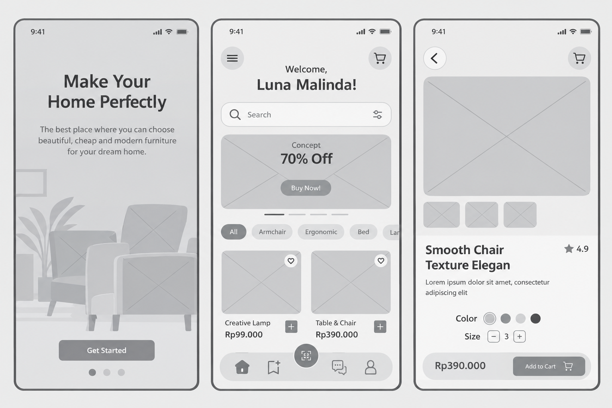
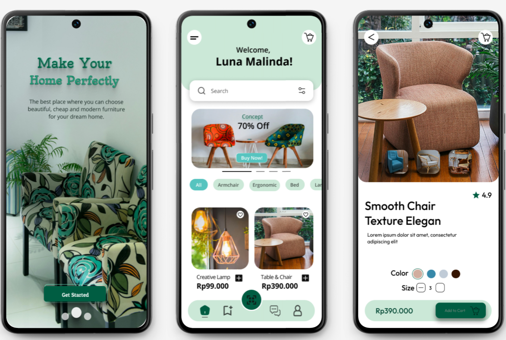

Konteks: Furnique adalah proyek desain UI/UX untuk sebuah aplikasi mobile one-stop solution yang berfokus pada penjualan furniture dan dekorasi rumah. Aplikasi ini dirancang untuk menjembatani kebutuhan pengguna akan produk estetik dengan pengalaman berbelanja yang mulus, mulai dari eksplorasi produk hingga proses pembayaran.
Masalah: Banyak pengguna (terutama generasi muda dan pekerja profesional) merasa kesulitan menemukan furniture yang sesuai dengan gaya estetika rumah mereka karena tampilan katalog yang membosankan dan tidak informatif. Selain itu, proses checkout yang rumit dan kurangnya transparansi informasi produk seringkali membuat pengguna ragu untuk melakukan pembelian secara online. Pengguna membutuhkan platform yang tidak hanya menjual produk, tetapi juga memberikan inspirasi dan kemudahan transaksi dalam hitungan menit.
Tujuan: Merancang antarmuka aplikasi Furnique yang intuitif dan visual, di mana pengguna dapat dengan mudah menemukan furniture impian, melihat detail produk secara jelas, dan melakukan pembelian dengan cepat tanpa hambatan.
Saya melakukan wawancara dengan 1 orang pengusaha yang baru saja pindah ke rumah baru dan sedang mencari furniture. Dari riset ini, saya membuat User Persona:

Konsep Relasi Utama
1. Users memiliki banyak Orders: Satu pengguna dapat melakukan banyak transaksi pembelian.
2. Products memiliki banyak Categories: Produk furniture dikelompokkan berdasarkan kategori (misal: Kursi, Lampu, Meja) untuk memudahkan pencarian.
3. Orders adalah parent dari Order Details: Detail pembelian mencakup produk apa saja yang dibeli, jumlah, dan harga.
4. Transactions digunakan oleh Orders: Setiap pesanan terhubung dengan metode pembayaran (Payment Methods) yang digunakan.

# Home & Search: Halaman utama menampilkan highlight produk (seperti pada desain "Make Your Home Perfectly"), fitur pencarian dengan hasil visual (gambar produk) agar pengguna cepat mengenali produk yang dicari, serta kategori populer (Sofa, Kursi, Lampu, dll).
# Course Detail : Halaman di mana pengguna dapat melihat foto produk dalam resolusi tinggi, deskripsi bahan, pilihan warna, dan ulasan. Terdapat tombol "Add to Cart" atau "Buy Now" yang menonjol.
# Cart & Checkout: Halaman keranjang belanja yang ringkas dan halaman pembayaran yang menampilkan ringkasan pesanan, alamat pengiriman, dan opsi pembayaran populer.

Pendekatan Visual (UI): Desain akhir menggunakan palet warna hijau sage (sesuai dengan brand identity Furnique) dipadukan dengan warna netral (putih dan krem) untuk menciptakan kesan natural, hangat, dan estetik. Tipografi yang digunakan adalah sans-serif yang ramah dan mudah dibaca. Ikon dibuat dengan gaya outline (garis) yang modern agar terlihat bersih.

# Product Highlight (Fitur Utama): Pada halaman Home, pengguna disuguhkan dengan visual produk yang besar dan jelas (seperti "Smooth Chair Texture Elegan"). Terdapat pilihan warna produk (Color) dan ukuran (Size) di halaman detail untuk mengurangi keraguan pengguna sebelum membeli.
# Quick Add to Cart: Tombol "Add to Cart" atau "Buy Now" ditempatkan secara strategis dan berwarna kontras (hijau tua) agar mudah ditemukan, mempercepat proses pengguna untuk melanjutkan ke pembayaran.
# Category & Filter: Fitur filter kategori (misal: Armchair, Ergonomics, dll) memudahkan pengguna mempersempit pilihan sesuai kebutuhan dan gaya ruangan mereka, menciptakan pengalaman belanja yang personal.
Hasil: Desain aplikasi Furnique berhasil menggabungkan estetika visual yang tinggi dengan fungsionalitas e-commerce yang solid. Antarmuka yang bersih dan navigasi yang intuitif membuat proses belanja furniture terasa lebih menyenangkan dan tidak membingungkan, sekaligus meningkatkan potensi konversi penjualan.
Pembelajaran (Learning): Melalui proyek ini, saya belajar bahwa dalam aplikasi e-commerce furniture, Visual Hierarchy sangatlah penting. Menempatkan foto produk yang berkualitas tinggi dan informasi harga yang jelas secara berdampingan membantu mengurangi cognitive load (beban berpikir) pengguna. Saya juga menyadari bahwa pemilihan warna yang tepat (seperti penggunaan warna hijau yang menenangkan) sangat efektif untuk membangun kepercayaan (trust) dan memberikan kesan bahwa produk yang dijual adalah produk premium dan berkualitas.